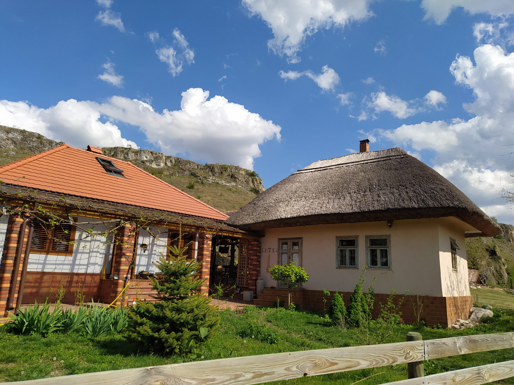

Duruitoarea Veche și Lacul Costești-Stânca
Duruitoarea Veche este una din cele mai cunoscute destinații turistice din Republica Moldova. Pantele calcaroase abrupte prezente aici sunt marcate de grote înfrumuseţate cu stânci de cele mai neobişnuite forme. Grota este săpată în stânca de deasupra satului, la o înălțime de 33 de metri. Cele mai spectaculoase sunt stâncile calcaroase, înzestrate cu grote de mărimi diferite, ce transformă această vale a râulețului Duruitoarea într-un loc perfect pentru odihnă.